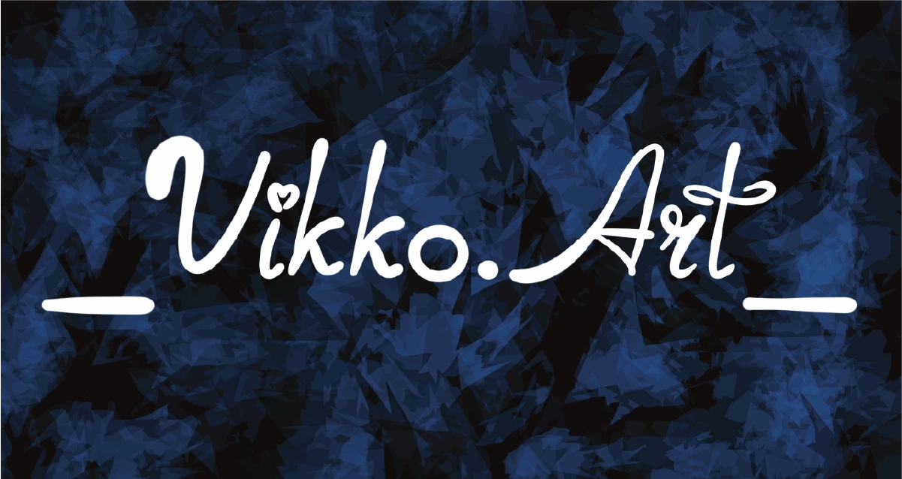
Привіт, я Вікторія! Забудь про нудні лекції та нескінченні гіпсові фігури. Моя філософія проста: ми малюємо те, що подобається саме тобі.
Академічна база — композиція, світлотінь та штрих — не будуть окремими уроками. Я м'яко вплету їх у твої проєкти, щоб навчання було природним, а результат — професійним.
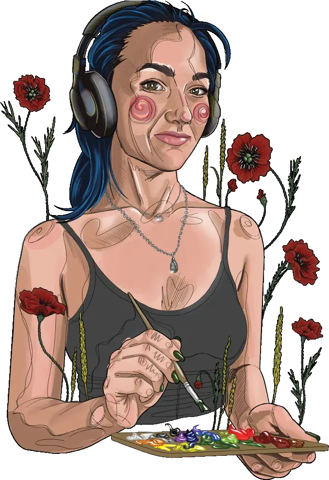
Тобі подобається аніме? Ми створимо твого персонажа. Хочеш розписати джинсовку? Зробимо це стильно. Мрієш про реалістичні портрети? Почнемо з твоїх улюблених акторів
Від академізму до міжнародного визнання
Художня школа та архітектурна освіта
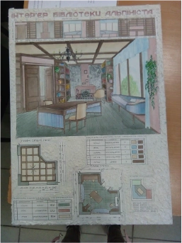
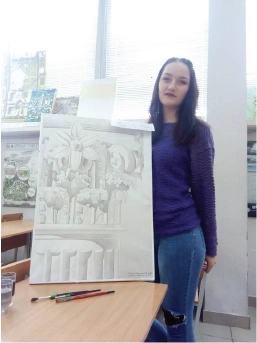
Скетчинг як спосіб мислення.
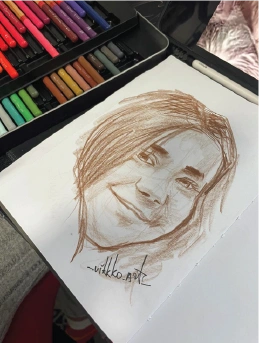
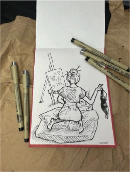
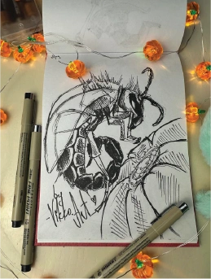
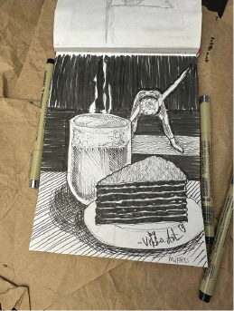
Класичний живопис та графіка: Акварель, гуаш, акрил, олійні фарби та всі графічні матеріали (олівці, пастель, лінер).
Створення своїми руками: Шиття, вишивка, в'язання, плетіння. Я знаю, як створити виріб «з нуля» — від ескізу до готової речі.
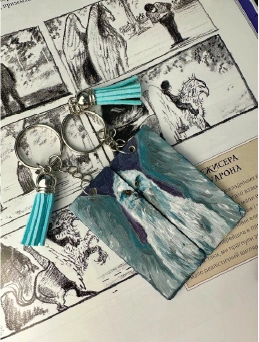
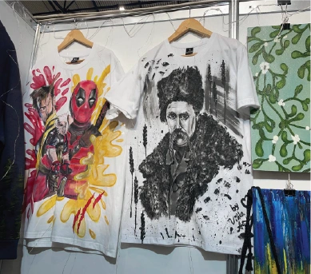
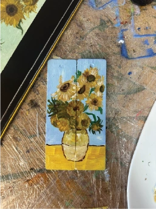
Постійний учасник Handmade Expo. Мої роботи представлені на найбільшій виставці хендмейду в Україні.
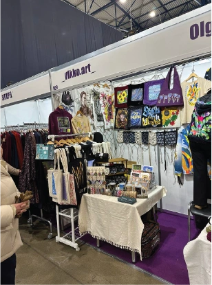
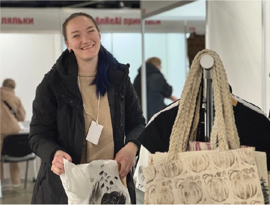
-Тривалість: 1 — 1,5 години.
-Що робимо: Ми не вчимо «нудну базу». Ми малюємо те, що цікаво саме дитині: від улюблених персонажів до складних скетчів. Основи (композиція, світлотінь) вплітаються у процес непомітно та захопливо.
-Тривалість: 1,5 — 3 години.
-Що робимо: Для тих, хто хоче вимкнути шум зовнішнього світу та знайти час для себе. Вчимося малювати портрети, скетчі чи графіку з нуля у вашому індивідуальному темпі. Це простір для вашої свободи та відпочинку.
-Тривалість: до 4 годин
-Що робимо: Створюємо разом спільну велику картину для дому або кожен окремо працює над своїм особистим проєктом. Все обговорюємо індивідуально під ваш запит: від масштабного полотна до розпису персонального шопера для кожного члена родини.
-Атмосфера: Це час для спілкування та нових спільних спогадів у вашому затишному домі.
Зустрічаємося на нейтральній території (у кав'ярні), щоб познайомитися, обговорити ваші цілі, мрії та творчі запити. Це час, щоб зрозуміти, чи нам комфортно працювати разом.
Це випробувальний термін, під час якого ми визначаємо сильні та слабкі сторони учня. Ми пробуємо різні техніки, щоб зрозуміти, що саме «драйвить» найбільше.
Після адаптації я розробляю персональну програму. Ми не просто малюємо — ми створюємо повноцінні проєкти: від стікерпаків та розробки персонажів до обкладинок та сторітелінгу.
Ми проходимо всі етапи дизайну, паралельно вивчаючи анатомію, світлотінь та композицію через реальні завдання.